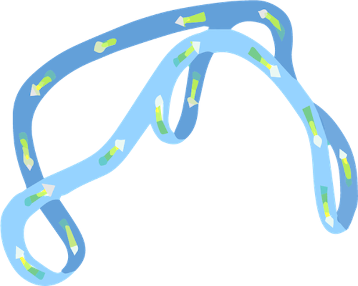
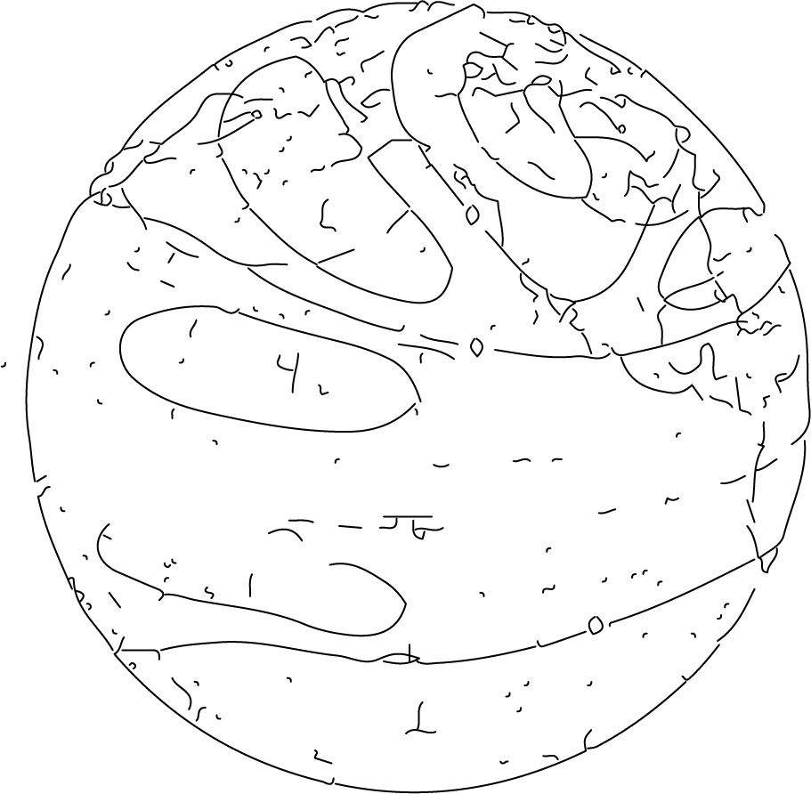

@font-face {
font-family: 'LatoWebHairline';
src: url('fonts/Lato-Hairline.eot');
src: url('fonts/Lato-Hairline.eot?#iefix') format('embedded-opentype'),
url('fonts/Lato-Hairline.woff2') format('woff2'),
url('fonts/Lato-Hairline.woff') format('woff'),
url('fonts/Lato-Hairline.ttf') format('truetype');
font-style: normal;
font-weight: normal;
}
body {
background-color: dimgray;
font-family: "LatoWebHairline";
font-size: 5vh;
overflow: hidden;
}
a {
color: #F4F4E8;
text-shadow: 1px 1px 5px #808080;
}
a:link {
text-decoration: none;
}
a:visited {
text-decoration: none;
}
a:hover {
text-decoration: none;
}
a:active {
text-decoration: none;
}
#sometime {
animation: blinker 11s linear infinite;
position:absolute;
top:10px;
left: 25px;
z-index: 2;
}
@keyframes blinker {
0% {
opacity: 0.1;
}
}
#somewhere {
animation: blinker 10s linear infinite;
position:absolute;
bottom:20px;
left:25px;
z-index: 2;
}
@keyframes blinker {
50% {
opacity: 0.1;
}
}
.photo {
display: none;
}
#sometime:hover + #conv {
display: block;
position: absolute;
right: 20px;
bottom: 20px;
filter: opacity(.5) blur(.1px) drop-shadow(0 0 0.25rem #CCCCCC);
}
#somewhere:hover + #qiu {
display: block;
position: absolute;
right: 0;
bottom: 0;
filter: opacity(.7) blur(.1px) drop-shadow(0 0 0.3rem #F5F5DC);
}
.menu:hover { text-shadow: 1px 1px 5px #CCCCCC;
cursor: default;
}
#myVideo {
position: absolute;
right: 0;
bottom: 0;
min-width: 120vw;
min-height: 120vh;
z-index: -3;
filter:opacity(20%) saturate(150%) brightness(130%);
}
.layer {
background-color: rgba(105, 105, 105, 0.1);
position: absolute;
bottom: 0;
right: 0;
width: 100vw;
height: 100vh;
z-index: -1;
overflow: auto;
}
::-webkit-scrollbar {
width: 1px;
}
::-webkit-scrollbar-track {
background: #ffffff00;
}
::-webkit-scrollbar-thumb {
background: #2b2d2f;
}
::-webkit-scrollbar-thumb:hover {
background: #a9a9a9;
}

